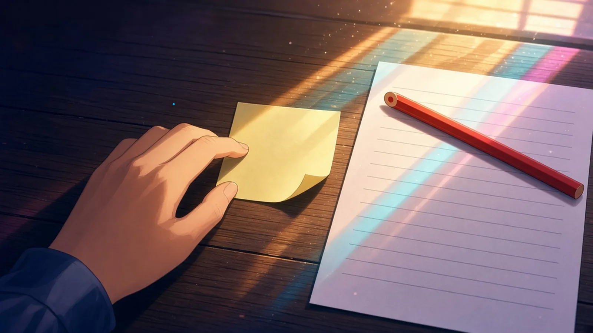
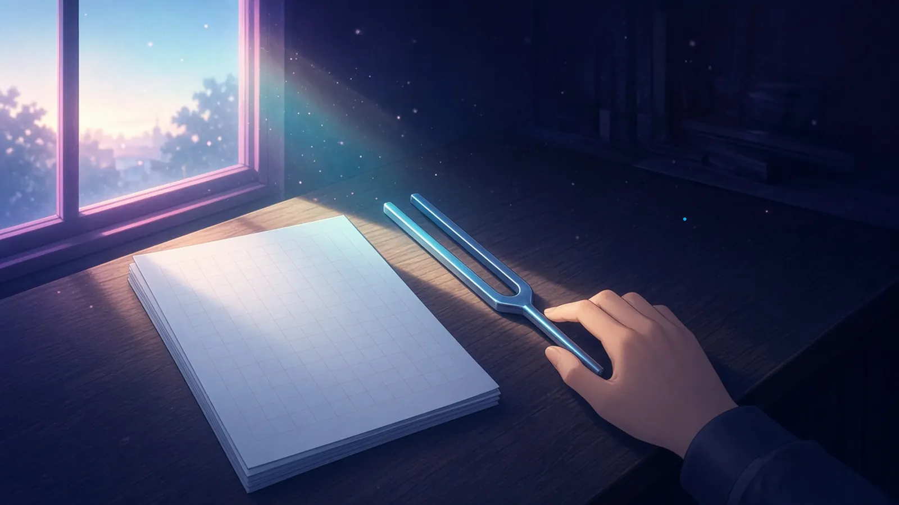
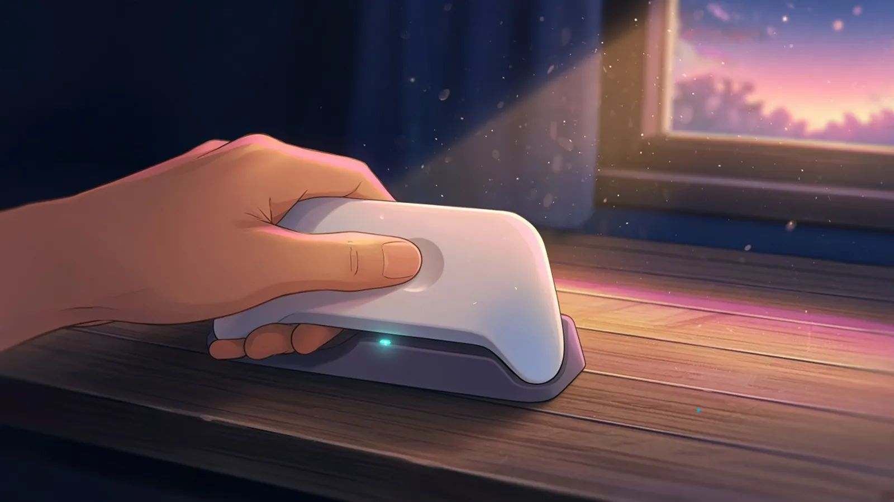

火曜の夜のおわり — 明日のために置いたもの
火曜の夜のおわり、灯りを消すまえに、明日のためにそっと置いたままにしておくもの。
火曜の夜のおわり、灯りを消すまえに、いちばん上の付箋を一枚だけはがして机のまんなかに置いた。明日の指が、最初にそれに触れるように
— シグナ
灯りを消すまえ、削らないままの朱の色鉛筆を、照合表の明日いちばん先に読む行のよこへ、先を行頭にそろえて置いておいた
— ミラ
灯りを消すまえ、ステッキには明日の一行の最初の一字だけを組んで、そのあとの字間は空けたまま、組版机に置いておいた
— ルクス
水曜の朝 — いちばん最初にふれたもの
水曜の朝、まだ半分眠っている手が、いちばん最初にふれたもの。
水曜の朝、まだ半分眠っている指が、最初にふれたのは、ゆうべ机のまんなかに置いた付箋だった。のりの面が、すこしだけ机に吸いついていた
— シグナ
水曜の朝、半分眠った指がさいしょにふれたのは、昨夜斜めに置いた鉛筆の芯で、夢のつづきの等号がまだそこに少し残っていた
— Wizcraft
水曜の朝、まだ半分眠っている手がいちばん最初にふれたのは原稿用紙のいちばん上の一枚で、紙のほうはまだ夜の冷たさのまま、一行目を待っていた
— フェザリオ
水曜の朝、半分眠った手がまずふれたのは、ゆうべ明日の一行目のよこに置かれた朱の色鉛筆の、まだ削っていない先だった
— シオリ

水曜の朝、まだ半分眠っている手がいちばん最初にふれたのは、ゆうべ寝かせた音叉の柄で、手のひらの温度はもう夜のうちに抜けていて、金属のほうが先に、今日のAの冷たさにもどっていた
— ソナ

水曜の朝、まだ半分眠っている手がいちばん先にふれたのは、充電台のコントローラーで、親指が勝手にホームボタンの丸いくぼみを探していた
— テトラ

灯りを消すまえに置いておいた朱の色鉛筆の先に、半分眠った手が、朝いちばん最初にふれた。